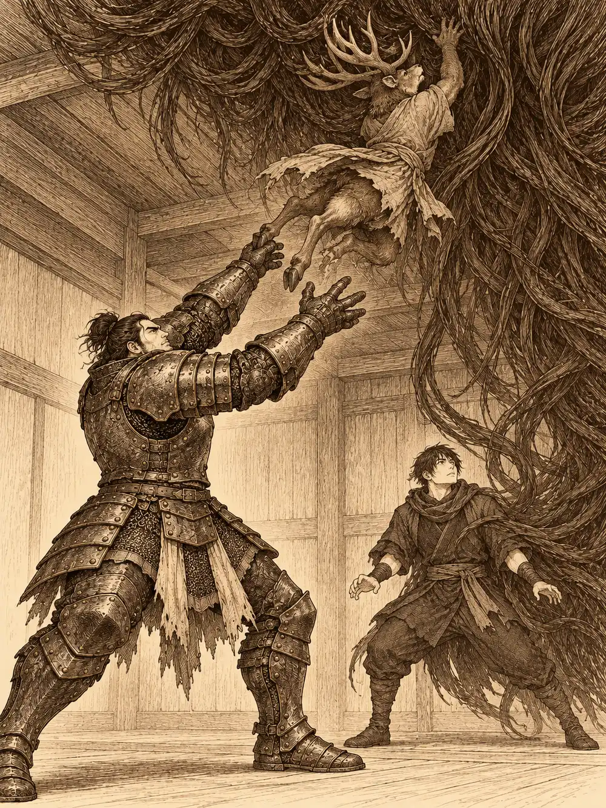

Capítulo 2
Contrato de limpieza
Libro I · Los cazadores de Ukio
Dos semanas después de la muerte del kamaitachi, Tokugawa y Sun Gukon seguían sin pagar una sola noche en la taberna de Kitaro. Era la recompensa del pueblo: cama, comida y sake mientras quisieran quedarse, y ninguno de los dos tenía prisa por marcharse. Leonardo y Talos se habían ido hacia Sho, un poco más al sur, en busca de otros encargos. Los que se quedaron no los echaban de menos tanto como habría sido decente.
Aquella tarde Kitaro se apoyó en la barra, bajó la voz y les habló de un trabajo.
Un noble de la familia Baki volvía de Sho en un par de días. Hacía unos diez años que nadie de su casa pisaba Ukio, y la propiedad que tenían al norte del pueblo llevaba todo ese tiempo cerrada. Diez años de abandono son mucho tiempo, dijo el tabernero, y en una casa vacía se instalan cosas. Si los cazadores la dejaban limpia de yokai antes de que llegara su dueño, el noble pagaría bien.
"Aunque parece que sois pocos", añadió, y señaló con la barbilla una mesa del fondo. "Esos dos han llegado esta tarde. Tienen pinta de saber lo que hacen".
Eran un humano de gesto serio, que comía poco y hablaba menos, y un cervan, un hombre ciervo de cornamenta ancha, que en ese momento tenía la cabeza metida en un cuenco de ensalada. Sun se acercó con el sake en la mano y se sentó a su mesa con los pies encima, porque la confianza se toma, no se pide. Tokugawa llegó detrás y, sin esperar a que nadie dijera nada, les estrechó las manos a los dos a la vez entre las suyas, enormes, sacudiéndolas como si quisiera despertarlas.
"¡Encantado, encantado, encantado!".
"Ya os acostumbraréis a su efusividad", explicó Sun. "Se entusiasma por casi todo".
El humano dijo llamarse Jin. Cuando le preguntaron si sabía matar bichos, respondió que era una profesión que no había elegido, pero que sabía desempeñar. Trabajaba por dinero y no le avergonzaba decirlo. El cervan sacó por fin la cabeza del cuenco, rumiando, y aseguró que sabía pelear. Alguien lo llamó cabra.
"No soy una cabra", contestó, muy digno. "Soy un ciervo".
Se llamaba Shiru. En pocos minutos los cuatro habían acordado repartir el trabajo y la paga, y Shiru había ofrecido un trago de sake a Jin con una pequeña reverencia, a la manera tradicional.
Kitaro los miró extrañado cuando se levantaron para salir.
"¿No pensaréis ir ahora? Los yokai no van a salir a plena luz del día. Tendréis que esperar a la noche".
Esperaron, pues. Kitaro les trajo soba, empanadillas, pescado y más sake del que convenía antes de una cacería. Sun comía como si tuviera que llenar un pozo y los cuencos vacíos se le apilaban al lado en una torre cada vez más alta. Jin picó un poco y se apartó lo justo para no parecer descortés. Shiru fue recogiendo los trozos de pan que los demás dejaban y se los comió todos.
La casa de los Baki estaba a las afueras, al norte, y era grande: un edificio principal de madera oscura y, al otro lado de la parcela, una construcción más pequeña que parecía destinada a los sirvientes. De noche resultaba difícil verla bien. Las telarañas colgaban de los aleros como velos sucios, la madera tenía las marcas negras de muchas lluvias y el conjunto entero desprendía ese olor a humedad cerrada que tienen las casas donde nadie ha abierto una ventana en años.
Shiru, que no veía en la oscuridad, encendió una antorcha. La puerta estaba atrancada con un madero podrido que se deshizo en astillas al levantarlo. Dentro, el tatami del recibidor estaba tan cubierto de polvo que sus pisadas quedaban marcadas como en la nieve. Había sandalias sueltas por el suelo, un paraguas tirado en un rincón y unas antorchas apagadas en las paredes, que alguien encendió una a una.
"Venimos del servicio de limpieza", anunció Sun en voz alta, a nadie.
Uno de los cazadores recogió el paraguas sin pensarlo mucho. Lo notó viscoso en la mano, cubierto de babas, y antes de soltarlo recibió un golpe en el costado. El paraguas saltó al suelo y se reveló entero: donde debía tener el mango le salía una pierna con sandalia, tenía dos bracitos ridículos, un solo ojo enorme y una lengua larguísima que agitaba delante de ellos mientras brincaba y se reía.
Jin le lanzó una llamarada. Shiru le dio con la antorcha. Tokugawa lo hirió con la espada, y Shiru terminó de romperlo con un trozo de jarrón que encontró a mano. Para entonces las sandalias del suelo también se habían puesto a dar saltos, y la pelea se volvió una escena que nadie habría querido explicar a un noble: el cervan golpeando sandalias con los restos del paraguas, Jin reduciendo una a ceniza, Sun agarrando otra con el pie y lanzándola contra una tercera. Al final del recibidor no quedaba un mueble entero.
Tokugawa cerró los ojos un momento y buscó con sus sentidos de paladín. Había algo más, algo malo, y estaba cerca. Lo condujo hasta una puerta corredera que, cuando se acercó, se llenó de ojos. Decenas. Se abrieron todos a la vez y lo miraron.
El paladín resistió aquella mirada, que le apretó la mente como una mano, y los cuatro volvieron a la carga. La puerta respondía con rayos. Fue Jin quien la destruyó por fin con un ataque de fuego que la dejó ardiendo en su marco. Al otro lado había una sala con un altar polvoriento y varillas de incienso apagadas desde hacía años. La presencia que Tokugawa había sentido ya no estaba allí.

Desde el jardín interior, Sun alcanzó a ver algo al otro lado: una masa de pelo que se deslizaba por un pasillo y desaparecía. Fue un instante. Siguieron buscando con las antorchas en alto.
En una habitación con estanterías, entre libros comidos por el polvo, uno de los cazadores encontró un recetario de cocina y decidió llevárselo a Kitaro. Mientras lo hojeaba, la luz de la habitación empezó a apagarse de una forma extraña, como si alguien la estuviera respirando. Jin se acercó al farolillo que colgaba del techo y vio un ojo dentro de la llama.
El farolillo se descolgó solo. La espada apenas lo rozó, el libro con el que Shiru lo golpeó le hizo el mismo daño que a una mosca y los dardos de Sun rebotaron contra el papel encerado. Tokugawa lo destruyó a golpes; apareció otro, y el monje acabó con él. La habitación quedó a oscuras y, durante un momento, solo se oyó la respiración de los cuatro.
El cansancio empezó a pesar, y con él la desconfianza. Nadie sabía ya qué objeto de aquella casa iba a abrir un ojo. Tokugawa destrozó una cama por si acaso. Jin entró solo en el dormitorio principal, miró el lecho de matrimonio y le prendió fuego. Después salió y cerró la puerta. Nadie lo vio hacerlo.
"Esta casa tiene dueño", recordó alguien mirando los destrozos. "Nos lo van a descontar".
La cocina y la despensa estaban en silencio. Demasiado. Ninguno levantó la vista a tiempo. La masa de pelo estaba pegada al techo, a cuatro o cinco metros del suelo, y se dejó caer sobre Jin con intención de envolverlo.
Tokugawa no tenía cómo alcanzarla, pero tenía a Shiru. Agarró al cervan, lo levantó como quien levanta un fardo y lo lanzó hacia el techo con la cornamenta por delante. El ariete funcionó. Los cuernos se clavaron en la maraña y la arrancaron de su sitio. La criatura cayó, pero no estaba vencida: se deslizó entre ellos como una alfombra viva, buscando carne, y terminó por cerrarse alrededor del propio Tokugawa. El paladín desapareció dentro de ella, ciego e inmovilizado.
Shiru rompió una mesa contra la masa. Sun la golpeó una y otra vez con el bastón, con cuidado de no darle al compañero que había dentro. Fue Tokugawa quien acabó con ella desde el interior: apoyó las manos donde pudo y descargó su magia a través de ellas. El pelo se deshizo y reapareció el paladín, despeinado, de pie en mitad de la cocina.
La casa quedó tranquila. Sun anunció que necesitaba una cerveza y echó a andar hacia la salida. Fue entonces cuando oyó los golpes.
Toc, toc, toc, desde detrás de una puerta cerrada.
"¿Quién es?", preguntó alguien, y nadie contestó.
Shiru tomó carrerilla y cargó con los cuernos. La puerta saltó en pedazos. Dentro, en el techo, colgado de espaldas como un murciélago, había un bicho muy feo que olía a cloaca y desplegó hacia ellos una lengua de longitud absurda. La lengua alcanzó a Shiru, lo quemó con algo corrosivo, se le enroscó al cuerpo y lo arrastró hacia arriba. El monstruo lo recibió con un zarpazo.
Tokugawa le infundió miedo, y el bicho huyó, pero huyó por el techo y sin soltar a su presa, hasta perderse de la vista del paladín. Shiru, colgado y herido, se aferró a su atacante para que no pudiera llevárselo más lejos, y con el resto de la pata de la mesa que todavía llevaba encima le dio en lo que fuera que tuviera por cara.
Sun intentó algo con alcohol y fuego que no salió del todo como esperaba. Después Tokugawa lo impulsó hacia arriba y el mono alcanzó el techo. Lo que siguió fue una lluvia de golpes, rápidos, precisos, uno detrás de otro.
"¡Suelta a la cabra!".
La criatura soltó a Shiru. Un último golpe con la palma abierta, en el punto exacto, y el monstruo se desprendió del techo y cayó al suelo con un ruido húmedo. Los cuatro lo rodearon. Jin desenvainó la katana y le cortó la cabeza. La metieron en un jarrón, porque olía tanto que nadie quería llevarla en la mano, y la guardaron como prueba del trabajo.
Entonces Tokugawa y Sun arrugaron la nariz al mismo tiempo. Olía a quemado.
La cama del dormitorio llevaba ardiendo todo ese rato y el fuego había ido trepando por la habitación. Mientras los demás salían a toda prisa, uno de ellos corrió al estanque del patio, cargó agua y volvió una vez, y otra, hasta que las llamas se apagaron. La casa seguía en pie. El dormitorio había quedado negro de arriba abajo.
El señor Baki llegó un par de días después, en un carruaje enorme, con caballos, acompañantes y soldados. Kitaro presentó a los cazadores con orgullo. Al noble le impresionó el tamaño de Tokugawa y le gustó la demostración de fuerza que Shiru hizo delante de él. Las cuentas, sin embargo, no las llevaba él.
Las llevaba Humiko, que ya había recorrido la casa de punta a punta. Confirmó que no quedaba un yokai dentro. También confirmó que faltaban puertas, que el mobiliario estaba destrozado y que una de las habitaciones estaba completamente quemada. La recompensa prevista era de treinta monedas de oro por cabeza; les descontaría diez a cada uno por los desperfectos. Puso veinte en la mano de cada cazador.
Tokugawa dio un paso al frente. Él podía ayudar con las reparaciones, dijo. Sabía trabajar la madera y no le importaba sudar. Humiko lo pensó, aceptó, y devolvió las diez monedas a cada uno de los cuatro. Treinta por cabeza, al final, y una deuda de trabajo que el paladín tendría que saldar cuando lo llamaran.
Antes de que se dispersaran, el herrero se acercó a Tokugawa con una bolsa: cincuenta monedas de plata por las jabalinas que le había dejado para vender. Las cosas empezaban a moverse en Ukio, le contó. Desde que había muerto el kamaitachi y había vuelto la familia Baki, llegaban recursos, y la herrería volvía a tener armas en las estanterías.
Tokugawa sopesó la bolsa, sonrió y se la guardó. El recetario polvoriento seguía en algún zurrón, esperando a que alguien se acordara de dárselo a Kitaro.